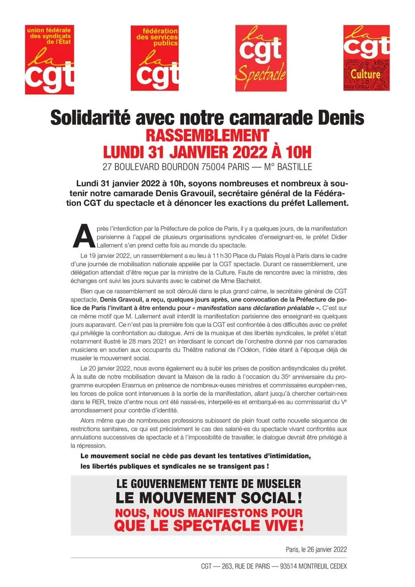

Publication sur X
Pour que le spectacle vive. Soutien aux travailleurs de la culture
Date de publication sur X · 27 janvier 2022
Repères éditoriaux
Le visuel relaie un appel syndical de soutien à un travailleur du spectacle.
Texte de la publication sur X
Pour que le spectacle vive !
Le gouvernement tente de museler le mouvement social et le préfet Lallement s'en prend cette fois au monde du spectacle. https://t.co/LNUC1rcFVd

Sources
PCF 79 · @79Parti sur X · AR-0005-TW-1486646482321170437
À lire aussi · Pass culture, non à la punition collective ! · Le lien d’origine
Publications associées
- Pour que le spectacle vive ! · Version Facebook du message